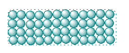
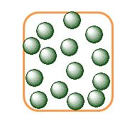
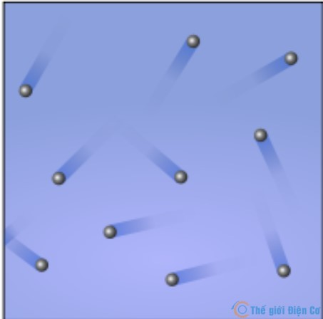
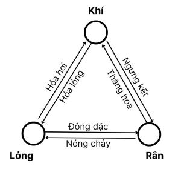
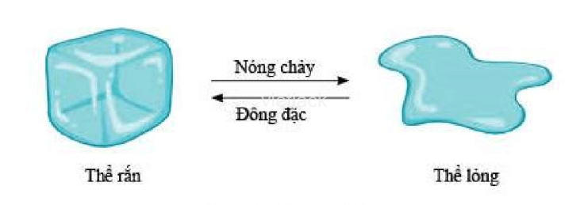

CẤU TRÚC CỦA CHẤT. SỰ CHUYỂN THỂ
I. MÔ HÌNH ĐỘNG HỌC PHÂN TỬ VỀ CẤU TẠO CHẤT
_ Các chất được cấu tạo từ các hạt riêng biệt là các phân tử riêng biệt.
_ Thuật ngữ “phân tử” nói trên được dùng để chỉ chung cho: phân tử, nguyên tử, ion là các hạt cấu tạo nên chất.
_ Cấu trúc về chất là cấu trúc gián đoạn (bởi vì giữa các phân tử, các hạt vốn dĩ có khoảng cách rất rất rất bé, tính bằng nanomet)
_ Các phân tử chuyển động không ngừng, gọi là chuyển động nhiệt (phụ thuộc vào nhiệt độ: nhiệt càng cao thì dao động càng lớn)
_ Giữa các phân tử có lực hút và lực đẩy, gọi chung là lực liên kết phân tử.
(*) Chuyển động hỗn loạn không ngừng của các hạt rất nhỏ dưới tác dụng của các phân tử chất lỏng hoặc chất khí được gọi là chuyển động Brown.
_ Giữa các phân tử có lực hút, lực đẩy, gọi chung là liên kết phân tử.
_ Khoảng cách càng nhỏ -> lực đẩy càng lớn và ngược lại.
_ Nếu khoảng cách giữa các phân tử rất lớn -> lực liên kết không đáng kể
II. CẤU TRÚC CỦA CÁC THỂ RẮN LỎNG KHÍ
a) Chất rắn
_ Hình dạng riêng xác định.
_ Thể tích xác định.
_ Các phân tử ở vị trí rất gần nhau, sắp xếp có trật tự.
_ Lực liên kết các phân tử rất mạnh.
_ Các phân tử dao động quanh VTCB, VTCB cố định.
_ Khó nén
b) Chất lỏng
_Hình dạng riêng không xác định, phụ thuộc vào bình chứa.
_Thể tích xác định.
_Các phân tử ở vị trí khá xa nhau, sắp xếp rời rạc. Khoảng cách giữa các phân tử chất lỏng bé hơn chất khí nhưng lớn hơn chất rắn.
_ Lực liên kết phân tử lớn hơn thể khí nhưng nhỏ hơn thể rắn -> giữ cho các phân tử gần nhau hơn thể khí nên dao động quanh các VTCB nhưng VTCB không cố định
_Khó nén
c) Chất khí
_Không có hình dạng riêng, phụ thuộc vào vật chứa.
_Thể tích không xác định, phụ thuộc vào vật chứa.
_Các phân tử ở vị trí rất xa nhau (gấp hàng chục lần kích thước phân tử).
_Lực liên kết không đáng kể (rất yếu).
_Các phân tử chuyển động hỗn loạn.
_Dễ nén.
III. SỰ CHUYỂN THỂ
(Khi nhiệt độ và áp suất thay đổi, một chất có thể chuyển từ thể này sang thể khác)
IV. SỰ NÓNG CHẢY
_Đây là quá trình từ thể rắn chuyển sang thể lỏng
* Nếu là chất rắn kết tinh thì đồ thị có dạng đường gấp khúc
* Nếu là chất rắn vô định hình thì đồ thị có dạng đường thẳng
Trong quá trình nóng chảy, nhiệt độ của chất rắn kết tinh không đổi, nhiệt lượng thu vào dùng để phá vỡ liên kết giữa các phân tử. Khi chất đã chuyển hoàn toàn thành thể lỏng mà vẫn tiếp tục cung cấp nhiệt thì nhiệt độ sẽ tăng.
Trong quá trình nóng chảy, nhiệt độ của chất rắn vô định hình luôn tăng (tăng liên tục), vật rắn mềm đi và chuyển thành thể lỏng 1 cách liên tục.
Tại nhiệt độ nóng chảy, phần năng lượng nhận thêm để phá vỡ các liên kết được gọi là ẩn nhiệt nóng chảy
V. SỰ HÓA HƠI (bao gồm sự sôi và sự bay hơi)
a) Điểm chung giữa sự hóa hơi và sự sôi:
_Đều là quá trình chuyển từ thể lỏng sang thể khí
_Đề được cấp nhiệt liên tục.
b) Sự bay hơi
_Xảy ra tại mọi nhiệt độ hay còn thường gọi là "xảy ra ở bất kỳ nhiệt độ nào"
_Xảy ra trên bề mặt chất lỏng
_Tốc độ bay hơi phụ thuộc vào diện tích bề mặt, nhiệt độ và áp suất.
_Nếu mất nhiệt lượng thì giảm nhiệt độ.
c) Sự sôi
_Xảy ra tại nhiệt độ sôi của chất lỏng
_Xảy ra ở cả trong lòng của chất lỏng và bề mặt chất lỏng.
_Trong suốt thời gian sôi, nhiệt độ không đổi.